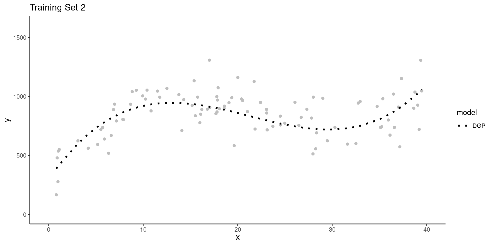
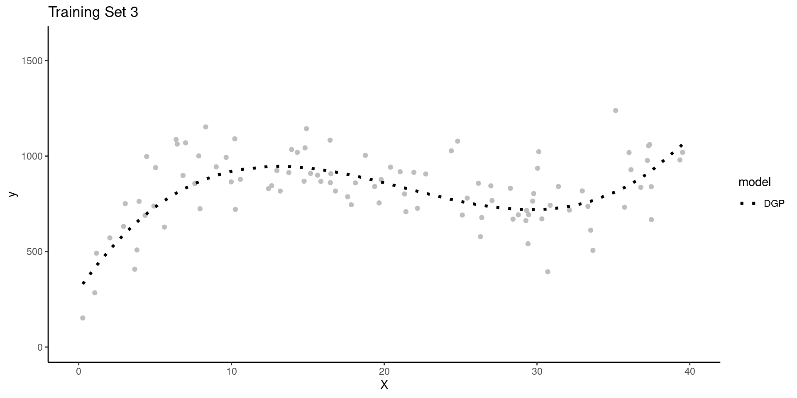
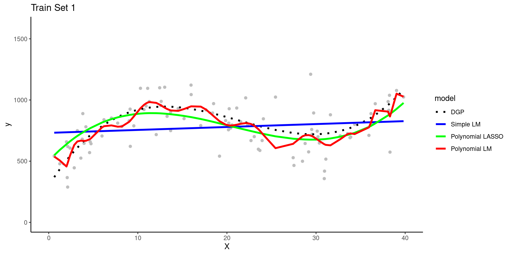
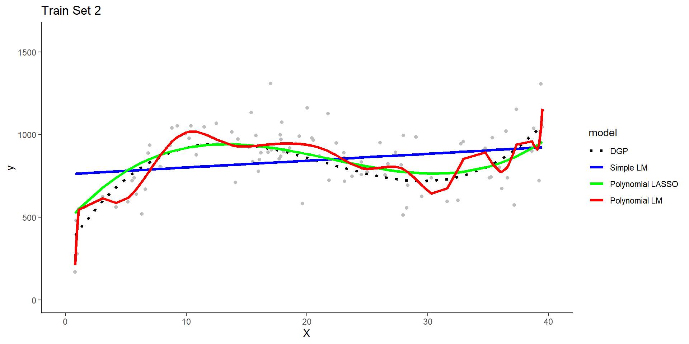
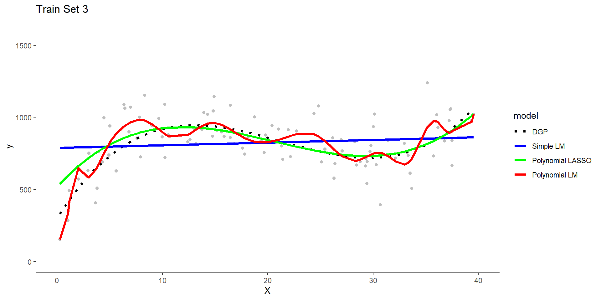
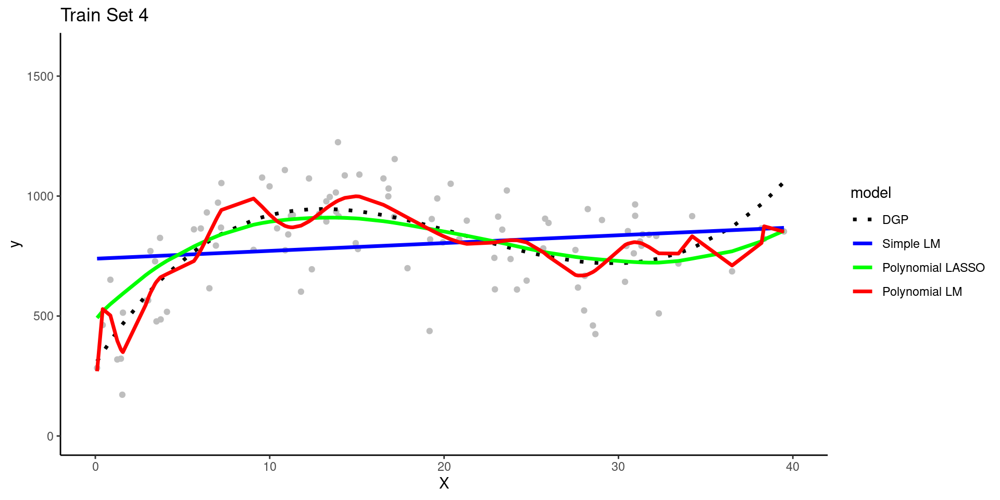
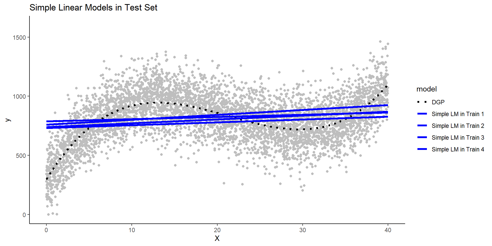
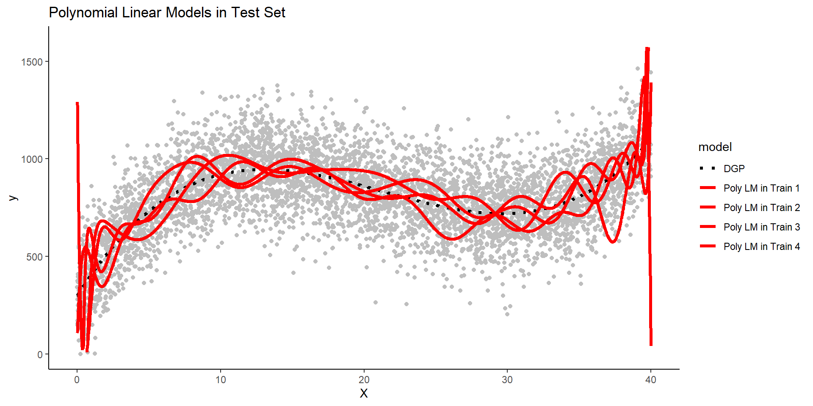
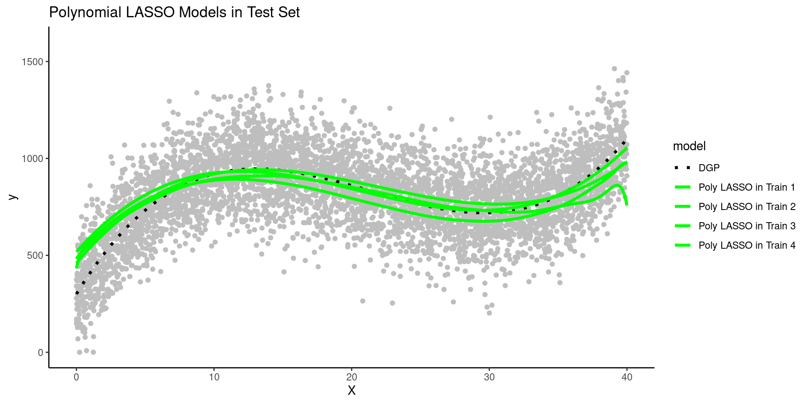

Overview of Machine Learning
Overview of Unit
Learning Objectives
- Understand uses for machine learning models
- Become familiar with key terminology (presented in bold throughout this unit)
- Understand differences between models
- Supervised vs. unsupervised
- Regression vs. classification
- Options for statistical algorithms
- Features vs. predictors
- Relationships between:
- Data generating processes
- Statistical algorithms
- Model flexibility
- Model interpretability
- Prediction vs. explanation
- Understand Bias-Variance Trade-off
- Reducible and irreducible error
- What is bias and variance?
- What affects bias and variance?
- What is overfitting and how does it relate to bias, variance, and also p-hacking
- Use of training and test sets to assess bias and variance
Readings
- Yarkoni and Westfall (2017) paper
- James et al. (2023) Chapter 2, pp 15 - 42
Lecture & Discussion Videos
- Lecture 1: An Introductory Framework
- Lecture 2: More Details on Supervised Techniques
- Lecture 3: Key Terminology in Context
- Lecture 3: An Example of Bias-Variance Tradeoff
- Discussion
Quiz and Application Assignment
- No application assignment this unit!
- The unit quiz is due by 8 pm on Wednesday January 24th
An Introductory Framework for Machine Learning
Machine (Statistical) learning techniques have developed in parallel in statistics and computer science
Techniques can be coarsely divided into supervised and unsupervised approaches
Supervised approaches involve models that predict an outcome using features
Unsupervised approaches involve finding structure (e.g., clusters, factors) among a set of variables without any specific outcome specified
However supervised approaches often use unsupervised approaches in early stages as part of feature engineering
This course will focus primarily on supervised machine learning problems
Examples of supervised approaches include:
- Predicting relapse day-by-day among recovering patients with substance use disorders based on cellular communications and GPS.
- Screening someone as positive or negative for substance use disorder based on their Facebook activity
- Predicting the sale price of a house based on characteristics of the house and its neighborhood
Examples of unsupervised approaches include:
- Determining the factor structure of a set of personality items
- Identifying subgroups among patients with alcohol use disorder based on demographics, use history, addiction severity, and other patient characteristics
- Identifying the common topics present in customer reviews of some new product or app
Supervised machine learning approaches can be categorized as either regression or classification techniques
- Regression techniques involve numeric (quantitative) outcomes.
- Regression techniques are NOT limited to “regression” (i.e., the general linear model)
- There are many more types of statistical models that are appropriate for numeric outcomes
- Regression techniques are NOT limited to “regression” (i.e., the general linear model)
- Classification techniques involve nominal (categorical) outcomes
- Most regression and classification techniques can handle categorical predictors
Among the earlier supervised model examples, predicting sale price was a regression technique and screening individuals as positive or negative for substance use disorder was a classification technique
More Details on Supervised Techniques
For supervised machine learning problems, we assume \(Y\) (outcome) is a function of some data generating process (DGP, \(f\)) involving a set of Xs (features) plus the addition of random error (\(\epsilon\)) that is independent of X and with mean of 0
\(Y = f(X) + \epsilon\)

Terminology sidebar: Throughout the course we will distinguish between the raw predictors available in a dataset and the features that are derived from those raw predictors through various transformations.
We estimate \(f\) (the DGP) for two main reasons: prediction and/or inference (i.e., explanation per Yarkoni and Westfall, 2017)
\(\hat{Y} = \hat{f}(X)\)
For prediction, we are most interested in the accuracy of \(\hat{Y}\) and typically treat \(\hat{f}\) as a black box
For inference, we are typically interested in the way that \(Y\) is affected by \(X\)
- Which predictors are associated with \(Y\)?
- Which are the strongest/most important predictors of \(Y\)
- What is the relationship between the outcome and the features associated with each predictor. Is the overall relationship between a predictor and \(Y\) positive, negative, dependent on other predictors? What is the shape of relationship (e.g., linear or more complex)?
- Does the model as a whole improve prediction beyond a null model (no features from predictors) or beyond a compact model?
- We care about good (low error) predictions even when we care about inference (we want small \(\epsilon\))
- Parameter estimates from models that don’t predict well may be incorrect or at least imprecise
- They will also be tested with low power
Model error includes both reducible and irreducible error.
If we consider both \(X\) and \(\hat{f}\) to be fixed, then:
\(E(Y - \hat{Y})^2 = (f(X) + \epsilon - \hat{f}(X))^2\)
\(E(Y - \hat{Y})^2 = [f(X) - \hat{f}(X)]^2 + Var(\epsilon)\)
\([f(X) - \hat{f}(X)]^2\) is reducible and \(Var(\epsilon)\) is irreducible
Irreducible error results from other important \(X\) that we fail to measure and from measurement error in \(X\) and \(Y\)
Irreducible error serves as an (unknown) bounds for model accuracy (without collecting additional Xs)
Reducible error results from a mismatch between \(\hat{f}\) and the true \(f\)
This course will focus on techniques to estimate \(f\) with the goal of minimizing reducible error
How Do We Estimate \(f\)?
We need a sample of \(N\) observations of \(Y\) and \(X\) that we will call our training set
There are two types of statistical algorithms that we can use for \(\hat{f}\):
- Parametric algorithms
- Non-parametric algorithms
Parametric algorithms:
- First, make an assumption about the functional form or shape of \(f\).
- For example, the general linear model assumes: \(f(X) = \beta_0 + \beta_1*X_1 + \beta_2*X2 + ... + \beta_p*X_p\)
- Next, a model using that algorithm is fit to the training set. In other words, the parameter estimates (e.g., \(\beta_0, \beta_1\)) are derived to minimize some cost function (e.g., mean squared error for the linear model)
- Parametric algorithms reduce the problem of estimating \(f\) down to one of only estimating some set of parameters for a chosen model
- Parametric algorithms often yield more interpretable models
- But they are often not very flexible. If you chose the wrong algorithm (shape for \(\hat{f}\) that does not match \(f\)) the model will not fit well in the training set (and more importantly not in the new test set either)
Terminology sidebar: A training set is a subset of your full dataset that is used to fit a model. In contrast, a validation set is a subset that has not been included in the training set and is used to select a best model from among competing model configurations. A test set is a third subset of the full dataset that has not been included in either the training or validation sets and is used for evaluating the performance of your fitted final/best model.
Non-parametric algorithms:
- Do not make any assumption about the form/shape of \(f\)
- Can fit well for a wide variety of forms/shapes for \(f\)
- This flexibility comes with costs
- They generally require larger
nin the training set than parametric algorithms to achieve comparable performance - They may overfit the training set (low error in training set but much higher error in new validation or test sets)
- They are often less interpretable
- They generally require larger
Generally:
- Flexibility and interpretability are inversely related
- Models need to be flexible enough to fit \(f\) well
- Additional flexibility beyond this can produce overfitting
- Parametric algorithms are generally less flexible than non-parametric algorithms
- Parametric algorithms can become more flexible by increasing the number of features (\(p\) from 610/710; e.g., using more predictors, more complex, non-linear forms to when deriving features from predictors)
- Parametric algorithms can be made less flexible through regularization. There are techniques to make some non-parametric algorithms less flexible as well
- You want the sweet spot for prediction. You may want even less flexible for inference in increase interpretability.

How Do We Assess Model Performance?
There is no universally best statistical algorithm
Depends on the true \(f\) and your goal (prediction or inference)
We often compare multiple statistical algorithms (various parametric and non-parametric options) and model configurations more generally (combinations of different algorithms with different sets of features)
When comparing models/configurations, we need to both fit these models and then select the best one
Best needs to be defined with respect to some performance metric in new (validation or test set) data
- There are many performance metrics you might use
- Root Mean squared error (RMSE) is common for regression problems
- Accuracy is common for classification problems
We will learn many other performance metrics in a later unit
Two types of performance problems are typical
- Models are underfit if they don’t adequately represent the true \(f\), typically because they have oversimplied the relationship (e.g., linear function fit to quadratic DGP, missing key interaction terms)
- Underfit models will yield biased predictions. In other words, they will systematically either under-predict or over-predict \(Y\) in some regions of the function.
- Biased models will perform poorly in both training and test sets
- Models are overfit if they are too flexible and begin to fit the noise in the training set.
- Overfit models will perform well (too well actually) in the training set but poorly in test or validation sets
- They will show high variance such that the model and its predictions change drastically depending on the training set where it is fit
More generally, these problems and their consequences for model performance are largely inversely related
- This is known as the Bias-Variance trade-off
- We previously discussed reducible and irreducible error
- Reducible error can be parsed into components due to bias and variance
- Goal is to minimize the sum of bias and variance error (i.e., the reducible error overall)
- We will often trade off a little bias if it provides a big reduction in variance
Key Terminology in Context
Machine learning has emerged in parallel from developments in statistics and computer science. As a result, there is a lot of terminology and often multiple terms used for the same concept. This is not my fault! However, to help us avoid confusion, I will try to use one set of terms.
In the following paragraphs, I identify these key terms in context (along with other synonymous terms used by others) and highlight them in bold.
There are two broad approaches in machine learning - unsupervised and supervised approaches.
This course focuses primarily on developing supervised models.
Developing a supervised machine learning model to predict or explain an outcome (also called DV, label, output) typically entails:
- Fitting models with multiple candidate model configurations (in training set(s))
- Assessing each model and selecting a best configuration (in validation set(s))
- Evaluating how well a model with that best configuration will perform with new observations (in test sets(s))
Candidate model configurations can vary with respect to
- the statistical algorithm used
- the algorithm’s hyperparameters
- the features used in the model to predict the outcome
Statistical algorithms can be coarsely categorized as parametric or non-parametric. But we will mostly focus on a more granular description of the specific algorithm itself (e.g., linear model, generalized linear model, elastic net, LASSO, ridge regression, neural network, KNN, random forest).
The set of candidate model configurations often includes variations of the same statistical algorithm with different hyperparameter (also called tuning parameter) values that control aspects of the algorithm’s operation. For example, the hyperparameter lambda controls the degree of regularization in penalized regression algorithms such as LASSO, ridge and elastic net. We will learn more about hyperparameters and their effects later in this course.
The set of candidate model configurations can vary with respect to the features that are included. A recipe describes how to transform raw data for predictors (also called IVs) into features (also called regressors, inputs) that are included in the feature matrix (also called design matrix, model matrix). This process of transforming predictors into features in a feature matrix is called feature engineering.
Crossing variation on statistical algorithms, hyperparameter values, and alternative sets of features can increase the number of candidate model configurations dramatically; developing a machine learning model can easily involve fitting thousands of model configurations. In most implementations of machine learning, the number of candidate model configurations nearly ensures that some fitted models will overfit the dataset in which they are developed such that they capitalize on noise that is unique to the dataset in which they were fit. For this reason, model configurations are assessed and selected on the basis of their relative performance for new data (observations that were not involved in the fitting process).
We have ONE full dataset but we use resampling techniques to form subsets of that dataset to enable us to assess models’ performance in new data. Cross-validation and bootstrapping are both examples of classes of resampling techniques that we will learn in this course. Broadly, resampling techniques create multiple subsets of data random samples that consist of subsets of the full dataset. These different subsets can be used for model fitting, model selection, and model evaluation.
Training sets are subsets that are used for model fitting (also called model training). During model fitting, models with each candidate model configuration are fit to the data in the training set. For example, during fitting, model parameters are estimated for regression algorithms, and weights are established for neural network algorithms. Some non-parametric algorithms, like k-nearest neighbors, do not estimate parameters but simply “memorize” the training sets for subsequent predictions.
Validation sets are subsets that are used for model selection (or, more accurately, for model configuration selection). During model selection, each (fitted) model — one for every candidate model configuration — is used to make predictions for observations in a validation set that, importantly, does not overlap with the model’s training set. On the basis of each model’s performance in the validation set, the relatively best model configuration (i.e., the configuration of the model that performs best relative to all other model configurations) is identified and selected. If you have only one model configuration, validation set(s) are not needed because there is no need to select among model configurations.
Test sets are subsets that are used for model evaluation. Generally, a model with the previously identified best configuration is re-fit to all available data other than the test set. This fitted model is used to predict observations in the test set to estimate how well this model is expected to perform for new observations.
An Example of the Bias-Variance Trade-off
Overview of Example
The concepts of underfitting vs. overfitting and the bias-variance trade-off are critical to understand
It is also important to understand how model flexibility can affect both the bias and variance of that model’s performance
It can help to make these abstract concepts concrete by exploring real models that are fit in actual data
We will conduct a very simple simulation to demonstrate these concepts
The code in this example is secondary to understanding the concepts of underfittinng, overfitting, bias, variance, and the bias-variance trade-off
- We will not display much of it so that you can maintain focus on the concepts
- You will have plenty of time to learn the underlying
When modeling, our goal is typically to approximate the data generating process (DGP) as close as possible, but in the real world we never know the true DGP.
A key advantage of many simulations is that we do know the DGP because we define it ourselves.
- For example, in this simulation, we know that \(Y\) is a cubic function of \(X\) and noise (random error).
- In fact, we know the exact equation for calculating \(Y\) as a function of \(X\).
- \(y = 1100 - 4.0 * x - 0.4 * x^2 + 0.1 * (x - h)^3 + noise\), where:
b0 = 1100b1 = -4.0b2 = -0.4b3 = 0.1h = -20.0- noise has
mean = 0andsd = 150
We will attempt to model this cubic DGP with three different model configurations
- A simple linear model that uses only \(X\) as a feature
- A (20th order) polynomial linear model that uses 20 polynomials of \(X\) as features
- A (20th order) polynomial LASSO model that uses the same 20 polynomials of \(X\) as features but “regularizes” to remove unimportant features from the model
Question: If the DGP for y is a cubic function of x, what do we know about the expected bias for our three candidate model configurations in this example?
Show Answer
The simple linear model will underfit the true DGP and therefore it will be biased b/c
it can only represent Y as a linear function of X.
The two polynomial models will be generally unbiased b/c they have X represented
with 20th order polynomials.
LASSO will be slightly biased due to regularization but more on that in a later unitStimulation Steps
With that introduction complete, lets start our simulation of the bias-variance trade-off
- We get four random samples of training data to fit models
In other words, we are simulating four separate studies where the researcher in each study is trying to develop a prediction model for Y using a sample of training data
Here are plots of these four simulated training sets with a dotted line for the data generating process (DGP)



- We get one more large random sample (N = 5000) with the same DGP to use as a test set to evaluate all the models that will be fit in the training sample across all of the simulations.
We fit the three model configurations in each of the four simulated training sets
We use the resulting models to make predictions for observations in the same training set in which they were fit




Question: Can you see evidence of bias for any model configuration? Look in any training set.
Question: Can you see any evidence of overfitting for any model configuration?
Show Answer
The polynomial linear model appears to overfit the data in the training set. In
other words, it seems to follow both the signal/DGP and the noise. However, you
can't be certain of this with only one training set and without knowing the DGP.
It is possible that the wiggles in the prediction line represent the real DGP.
You will need a test set to be certain about the degree of overfitting.- We use these same models (3 model configurations fit to 4 different training sets) to make predictions for new observations in the test set
Remember that the test set has NEW observations of X and Y that weren’t used for fitting any of the models.
Lets look at each model configurations performance in test separately
- Here are predictions from the four simple linear models (fit in each of the four training sets) in the test set

Question: Can you see evidence of bias for the simple linear models?
Show Answer
Yes, consistent with what we saw in the training sets, the simple linear model
systematically overestimates Y in some places and underestimates it in others.
The DGP is clearly NOT linear but this simple model can only make linear predictions.
It is a fairly biased model that underfits the true DGP. This bias will make a
large contribution to the reducible error of the modelQuestion: How much variance across the simple linear models is present?
Show Answer
There is not much variance in the prediction lines across the models that were
fit to different training sets. The slopes are very close across models and the
intercepts only vary by a small amount. The simple linear model configuration
does not appear to have high variance and model variance will not contribute much
to its reducible error.- Here are predictions from the four polynomial linear models in the test set

Question: How does the variance of these polynomial models compare to the variance of the simple linear models?
Question: How does this demonstrate the connection between model overfitting and model variance?
Show Answer
Model variance is a result of overfitting to the training set. If a model fits
noise in its training set, that noise will be different in every dataset. Therefore,
you end up with different models depending on the training set in which they are
fit. And none of those models will do well with new data as you can see in this
test set because noise is random and different in each dataset.- Here are predictions from the four polynomial LASSO models in the test set

Question: How does their bias compare to the simple and polynomial linear models?
Question: How does their variance compare to the simple and polynomial linear models?
- Now we will quantify the performance of these models in training and test sets with the root mean square error performance metric. This is the standard deviation of the error when comparing the predicted values for Y to the actual values (ground truth) for Y.
Question: What do we expect about RMSE for the three models in train and test?
Show Answer
The simple linear model is underfit to the TRUE DGP. Therfore it is
systematically biased everywhere it is use and won’t even fit train for this reason.
However, it’s not very flexible so it won’t be overfit to the noise in train and
therefore should fit comparably in test.
The polynomial linear model will not be biased at all given that the DGP is polynomial.
However, it is overly flexible (20th order) and so will substantially overfit the
training data such that it will show high variance and its performance will be poor in test.
The polynomial LASSO will be the sweet spot in bias-variance trade-off. It has
a little bias but not much. However, it is not as flexible due to regularization
by lambda so it won’t be overfit to its training set. Therefore, it should do
well in the test set.To better understand this:
- Compare RMSE across the three model configurations within the training sets (turquoise line)
- Compare how RMSE changes for each model configuration across its training set and the test set
- Compare RMSE across the three model configurations within the test set (red line)?
- Specifically compare the performance of simple linear model (least flexible) with the polynomial linear model (most flexible)
Question: Would these observations about bias and variance of these three model configurations always be the same regardless of the DGP?
Show Answer
No. A model configuration needs to be flexible enough and/or well designed to
represent the DGP for the data that you are modeling. The two polynomial models
in this example were each able to represent a cubic DGP. The simple linear model
was not. The polynomial linear model was too flexible for a cubic given that it
had 20 polynomials of X. Therefore, it was overfit to its training set and had
high variance. However, if the DGP was a different shape, the story would be
different. If the DGP was linear the simple linear model would not have been
biased and would have performed best. If this DGP was some other form (step function),
it may be that none of the models would work well.Discussion - Tuesday/Thursday
Course Overview
Introductions (preferred name, pronouns, program/department and year)
Structure of course
- Same flow each week
Week starts on Thursdays at 12:15 pm
Assignments include:
- Pre-recorded lectures
- Web book material
- Readings (James et al. (2023) and other sources; All free)
- Application assignment
Asychronous discussion and questions on Slack
Lab section on Tuesdays at 11:00 am - address previous week’s code
Quiz and application assignments due Wednesdays at 8 pm
Wrap-up discussion and conceptual questions on Thursdays at 11 am. Not a lecture
- Self-paced (except for due dates and discussion)
- Quizzes used to encourage and assess reading. Also to guide discussion.
- Workload similar to 610/710
- Office hours
- John - Thursdays, 1 – 2 pm
- Michelle - Wednesdays, 10 - 11 am
- Kendra - Mondays, 2:30 - 3:30 pm
- Personal appointments & Slack
- Same flow each week
The web book
- Primary source for all course materials
- Organized by units (with syllabus at front)
- Links to pre-recorded lectures, readings, and quiz
- Provides primary source for code examples (all you need for this course)
- Lecture follows book
Course as guided learning
- Concepts in lectures and readings
- Applications in web book and application assignment
- Discussion section is discussion/questions (not pre-planned lecture)
- Slack CAN be a good source for discussion and questions as well
- Grades are secondary (quizzes, application assignments, exams)
Why these tools?
Quarto- Scientific publishing system (reproducible code, with output, presentations, papers)
- Tool for collaboration
- Interactive with static product (render to html or pdf)
- Application assignments & web book
tidyverse?- The tidyverse is an opinionated collection of R packages designed for data science. All packages share an underlying design philosophy, grammar, and data structures
- Unmatched for data wrangling, EDA, and data visualization
tidymodels?- Consistent interface to hundreds of statistical algorithms
- Under VERY active development
- Well-supported and documented (tidymodels.org)
- Be careful with other web documentation (often out of date)
Why me?
- Primary tools in our research program
- Model for progression from 610/710
- Can do AND can collaborate with CS and expert data scientists
Environment
- Safe and respectful
- VERY encouraging of questions, discussion, and tangents
- Have fun
- Accomodations and Complaints
ChatGPT
- Yay! May develop into an amazing tool in your workflow
- Use as tool (like Stack Overflow) for applications (application assignments, application questions on exams)
- Check carefully - it can be wrong even when it looks right
- Do NOT use for conceptual questions (quizzes, conceptual exam questions). This type of info needs to be in your head to be effective data scientist.
Academic Integrity
- Do not cheat! Only you lose.
- No collaboration with classmates, peers, previous students on anything graded (including application assignments)
- All cheating reported to Department and Dean of Students. If application assignment or quizzes, zero on all of them because I can’t trust them. If exam, zero on exam.
Association vs. Prediction
Question: What is the difference between association vs. prediction?
Much research in psychology demonstrates association but calls it prediction!
Association (sometimes substantially) overestimates the predictive strength of our models
- Coefficients are derived to mimimize SSE (or maximize R2)
- R2 from GLM (using one sample) indexes how well on average any GLM that is fit to a sample will account for variance in that sample when specific coefficients are estimated in the same sample they are evaluated
- R2 does NOT tell you how well a specific GLM (including its coefficients) will work with new data for prediction
- R2 itself is positively biased even as estimate of how well a sample specific GLM will predict in that sample (vs. adjusted R2 and other corrections)
Prediction vs. Explanation
Examples of valuable prediction without explanation?
Can you have explanation without prediction?
Prediction models can provide insight or tests of explanatory theories (e.g., do causes actually predict in new data; variable importance)
Goal of scientific psychology is to understand human behavior. It involves both explaining behavior (i.e., identifying causes) and predicting (yet to be observed) behaviors.
- We overemphasize explanatory goals in this department, IMO
Data Generating Process
- \(Y = f(X) + \epsilon\)
- both function and Xs are generally unknown
Bias, Overfitting, and Variance
- What are they and how are they related?
Question: Describe problem of p-hacking with respect to overfitting?
Show Answer
When you p-hack, you are overfitting the training set (your sample). You try out
many, many different model configurations and choose the one you like best rather
than what works well in new data. This model likely capitalizes on noise in
your sample. It won't fit well in another sample. In other words, your conclusions
are not linked to the true DGP and would be different if you used a different
sample. In a different vein, your significance test is wrong. The SE does not
reflect the model variance that resulted from testing many different configurations
b/c your final model didn't "know" about the other models. Statistically invalid
conclusion!Cross Validation
- What is it?
- How are replication and cross-validation different?
Basic framework and terminology
Supervised vs. unsupervised machine learning?
Supervised regression vs classification?
- What is a data generating process?
- \(Y = f(X) + \epsilon\)
- Both function and Xs are generally unknown
- \(\hat{Y} = \hat{f}(X)\)
- Why do we estimate the data generating process?
Reducible vs. Irreducible error?
- Our predictions will have error
- You learned to estimate parameters in the GLM to minimize error in 610
- But error remained non-zero (in your sample and more importantly with same model in new samples) unless you perfectly estimated the DGP
- That error can be divided into two sources
- Irreducible error comes from measurement error in X, Y and missing X because predictors (causes) not measured.
- Irreducible without collecting new predictors and/or with new measures
- It places a ceiling on the performance of the best model you can develop with your available data
- Reducible error comes from mismatch between \(\hat{f}(X)\) and the true \(f(X)\).
- We can reduce this without new data.
- Just need better model (\(\hat{f}(X)\)).
- You didn’t consider this (much) in 610 because you were limited to one statistical algorithm (GLM) AND it didn’t have hyperparameters.
- You did reduce error by coding predictors (feature engineering) differently (interactions \(X1*X2\), polynomial terms \(X^2\), power transformations of X) This course will teach you methods to decrease reducible error (and validly estimate total error of that best model)
- We can reduce this without new data.
- What are the three general steps by which we estimate and evaluate the data generating process with a sample of data? Lets use all this vocabulary!
- Candidate model configurations
- Statistical algorithms
- Hyperparameters
- Features (vs. predictors?), feature matrix, feature engineering, recipe (tidymodels specific)
- Model fitting (training), selection, and evaluation
- Resampling techniques
- cross validation techniques (k-fold)
- boostrapping
- Training, validation, and test sets (terms vary in literature!)
- Candidate model configurations
Bias-variance tradeoff
What is underfitting, overfitting, bias, and variance?
Bias and variance are general concepts to understand during any estimation process
- Estimate mean, median, standard deviation
- Parameter estimates in GLM
- Estimate DGP - \(\hat{Y} = \hat{f}(X)\)
Useful conceptual examples of bias-variance
- Example 1: Darts from Yarkoni and Westfall (2017)

- Example 2: Models (e.g. many scales made by Acme Co.) to measure my weight
Bias
Biased models are generally less complex models (i.e., underfit) than the data-generating process for your outcome
Biased models lead to errors in prediction because the model will systematically over- or under-predict outcomes (scores or probabilities) for specific values of predictor(s) (bad for prediction goals!)
Parameter estimates from biased models may over or under-estimate the true effect of a predictor (bad for explanatory goals!)
Question: Are GLMs biased models?
Show Answer
Bias seems like a bad thing.
Both bias (due to underfitting) and variance (due to overfitting) are sources of (reducible) prediction errors (and imprecise/inaccurate parameter estimates). They are also often inversely related (i.e., the trade-off).
A model configuration needs to be flexible enough to represent the true DGP.
- Any more flexibility will lead to overfitting.
- Any less flexibility will lead to underfitting.
- Any more flexibility will lead to overfitting.
Ideally, if your model configuration is perfectly matched to the DGP, it will have very low bias and very low variance (assuming sufficiently large N)
The world is complex. In many instances,
- We can’t perfectly represent the DGP
- We trade off a little bias for big reduction in variance to produce the most accurate predictions (and stable parameter estimates across samples for explanatory goals)
- Or we trade off a little variance (slightly more flexible model) to get a big reduction in bias
- Either way, we get models that predict well and may be useful for explanatory goals
Overfitting - Variance
Consider example of p = n - 1 in general linear model. What happens in this situation? How is this related to overfitting and model flexibility?
Show Answer
The model will perfectly fit the sample data even when there is no relationship
between the predictors and the outcome. e.g., Any two points can be fit perfectly
with one predictor (line), any three points can be fit perfectly with two predictors
(plane). This model will NOT predict well in new data. This model is overfit
because n-1 predictors is too flexible for the linear model. You will fit the
noise in the training data.Factors that increase overfitting
- Small N
- Complex models (e.g, many predictors, p relative to n, non-parametric models)
- Weak effects of predictors (lots of noise available to overfit)
- Correlated predictors (for some algorithms like the GLM)
- Choosing between many model configurations (e.g. different predictors or predictor sets, transformations, types of statistical models) - lets return to this when we consider p-hacking
You might have noticed that many of the above factors contribute to the standard error of a parameter estimate/model coefficient from the GLM
- Small N
- Big p
- Small \(R^2\) (weak effects)
- Correlated predictors
The standard error increases as model overfitting increases due to these factors
Explain the link between model variance/overfitting, standard errors, and sampling distributions?
Show Answer
All parameter estimates have a sampling distribution. This is the distribution
of estimates that you would get if you repeatedly fit the same model to new samples.
When a model is overfit, that means that aspects of the model (its parameter
estimates, its predictions) will vary greatly from sample to sample. This is
represented by a large standard error (the SD of the sampling distribution) for
the model's parameter estimates. It also means that the predictions you will make
in new data will be very different depending on the sample that was used to
estimate the parameters.Describe problem of p-hacking with respect to overfitting?
Show Answer
When you p-hack, you are overfitting the training set (your sample). You try out
many, many different model configurations and choose the one you like best rather
than what works well in new data. This model likely capitalizes on noise in your
sample. It won't fit well in another sample. In other words, your conclusions
are not linked to the true DGP and would be different if you used a different sample.
In a different vein, your significance test is wrong. The SE does not reflect
the model variance that resulted from testing many different configurations b/c
your final model didn't "know" about the other models. Statistically invalid
conclusion!Parameter estimates from an overfit model are specific to the sample within which they were trained and are not true for other samples or the population as a whole
Parameter estimates from overfit models have big (TRUE) SE and so they may be VERY different in other samples
- Though if the overfitting is due to fitting many models, it won’t be reflected in the SE from any one model because each model doesn’t know the other models exist! p-hacking!!
With traditional (one-sample) statistics, this can lead us to incorrect conclusions about the effect of predictors associated with these parameter estimates (bad for explanatory goals!).
If the parameter estimates are very different sample to sample (and different from the true population parameters), this means the model will predict poorly in new samples (bad for prediction goals!). We fix this by using resampling to evaluate model performance.